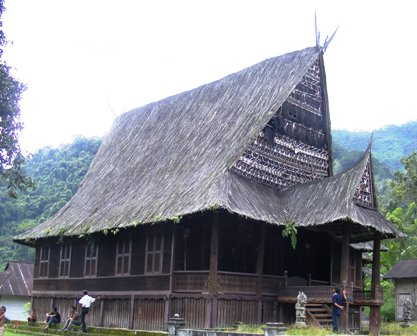

Bagas Godang


Rumah ini dulunya adalah tempat tinggal bagi raja. Bangunan ini berbentuk menyerupai rumah panggung dengan banyak tiang penyangga. Bahan utama yang digunakan dalam membangun rumah ini adalah kayu. Masyarakat Mandailing mengenal nilai-nilai luhur yang disebut dengan holong dohot domu. Holong berarti saling menyayangi sesama dan berbuat baik kepada orang lain. Domu berarti persatuan dari penduduk yang dianggap satu huta dan satu keturunan.
Jenis-jenis
Siwaluh jabu dibagi menurut bentuk atapnya dan dindingnya.[1] Adapun jenis-jenis siwaluh jabu menurut atapnya adalah sebagai berikut.[1]
Siwaluh jabu dibagi menurut bentuk atapnya dan dindingnya.[1] Adapun jenis-jenis siwaluh jabu menurut atapnya adalah sebagai berikut.[1]
Keberadaan Rumah Adat Karo juga tak terlepas dari pembentukan Kuta (kampung) di Tanah Karo yang berawal dari Barung, kemudian menjadi Talun, dan menjadi Kuta dan di dalam Kuta yang besar terdapat Kesain. Pada sebuah Barung biasanya hanya terdapat sebuah rumah sederhana, ketika sebuah Barung berkembang dan sudah terdapat 3 rumah di dalamnya disebut dengan Talun dan bila telah terdapat lebih dari 5 Rumah Adat disebut sebagai Kuta. Ketika Kuta sudah berkembang lebih pesat dan lebih besar maka Kuta dibagi atas beberapa Kesain (halaman/pekarangan), disesuaikan dengan merga-merga yang pertama manteki (mendirikan) Kuta tersebut.